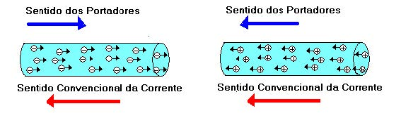
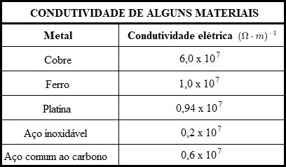
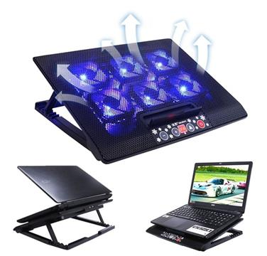
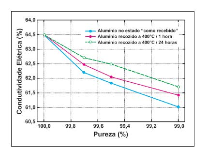
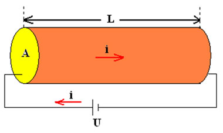
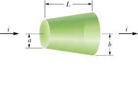

Após a descoberta do elétron, pelo físico Joseph John Thomson, em 1897, utilizando os raios catódicos, a comunidade científica, alguns anos à frente, se deparou com o início do desenvolvimento da teoria quântica. Assim, os físicos estavam buscando estudar o estado sólido da matéria, explicando os fenômenos ocorridos nos materiais. Durante esses estudos, o físico alemão Paul Drude (1863- 1906), propôs um modelo que explica a condução elétrica dos metais.
Para a formulação do modelo, Drude considerou 4 hipóteses, sendo elas:
● Não existe interação elétron – elétron;
● As colisões ocorrem de forma inesperada, de forma que não exista movimento dos íons;
● Existe um tempo médio entre as colisões;
● O elétron perde a memória sobre a trajetória e velocidade, após cada colisão.
Agora considerando um condutor, em equilíbrio eletrostático, temos algumas observações:
● O campo elétrico é nulo em seu interior, logo não existe corrente elétrica;
● Mesmo não existindo corrente elétrica, existe um movimento de elétrons no interior do condutor. Esse movimento se equipara ao movimento das moléculas de um gás ideal. O movimento ocorre de forma aleatória com uma velocidade muita alta, da faixa de 106m/s;
● Os elétrons são atraídos pelos íons, assim não escapam do material;
● O movimento é caótico, logo não existe um fluxo efetivo em nenhuma direção, não existindo corrente elétrica.
Na existência de um campo elétrico, existe um movimento de arraste provocado pelo campo. Esse movimento é na direção da força elétrica 𝐹⃗ e tem uma ordem de grandeza de aproximadamente 10-4m/s. Como existe um movimento de arraste, há também uma velocidade de arraste 𝑣⃗, a qual provoca um arraste ordenado das cargas, em um sentido determinado, no condutor. Essa movimentação de cargas é denominada: corrente elétrica. A corrente elétrica (i) por unidade de área transversal (A) define o módulo do vetor densidade de corrente (J). $$ {J=\frac{i}{A} \space \space \space \space \space \space \space \space \space \space \space \space \space \space \space \space \space \space \space \space (1)} $$ Já a corrente elétrica é definida como o fluxo total das cargas (Q) por unidade de tempo (Δt). Sendo basicamente expressada como: $$ {i=\frac{Q}{\Delta t} \space \space \space \space \space \space \space \space \space \space \space \space \space \space \space \space \space \space \space \space (2)} $$
Com a movimentação de cargas em uma determinada direção, é esperado que exista um sentido para a corrente elétrica. Mas como determinar o sentido dessa grandeza a partir da sua carga? Se o movimento for de prótons, como no acelerador de partículas, por exemplo, haverá a movimentação de cargas positivas. Já no caso da corrente elétrica gerada nos condutores usuais, o que ocorre é o arraste de elétrons. Desse modo, o sentido convencional adotado é dado ao observar o movimento dos portadores de carga, atribuindo-o conforme o sentido teórico ou real de cargas positivas. Nesse sentido, se a corrente elétrica for gerada por prótons, é adotado o sentido real dessa movimentação. Todavia, se a corrente é produzida por elétrons, o sentido covencional é adotado pelo movimento teórico de cargas positivas. Veja a imagem abaixo:

Já a condutividade elétrica de um material representa a capacidade que ele tem de transportar cargas elétricas, quando submetido a uma diferença de potencial. Um material de condutividade alta tem uma facilidade de transportar cargas elétricas e, de maneira oposta, um material com condutividade elétrica baixa apresenta uma resistência maior ao transporte de cargas elétricas. A condutividade (σ) é dada pela razão entre a densidade de corrente (J) e o campo elétrico (E), tal que: $$ { \sigma = \frac{J}{E} \space \space \space \space \space \space \space \space \space \space \space \space \space \space \space \space \space \space \space \space (3.1)} $$ Ainda mais, a condutividade (σ) também pode ser expressa como: $$ { \sigma = \frac{n \cdot e^2 \cdot \tau}{m} \space \space \space \space \space \space \space \space \space \space \space \space \space \space \space (3.2)} $$

A condutividade não é uma propriedade constante na natureza, ela varia entre um condutor e outro, além de que pode ser alterada ou influenciada por alguns aspectos, tais como:
Temperatura
Ao aumentar a temperatura de um condutor, pode-se alterar sua condutividade, tendo em vista que essa variação ocorre em virtude da excitação térmica dos átomos dos materiais. Não é atoa que alguns aparelhos eletrônicos sensíveis costumam ser acompanhados de mecanismos de resfriamento para manter a temperatura do condutor constante. Por exemplo, o cooler em um notebook, que tem o papel de reduzir o calor gerado pelos componentes da máquina.


Impurezas
Ao se ter impurezas, ou seja, partículas de isolamento de elementos não condutores nos condutores elétricos, pode haver impedimento do fluxo de corrente nos condutores, levando a uma diminuição nos níveis de condutividade do material (essas partículas podem ser de origem natural ou por falhas de fabricação). Por exemplo, o nível de impureza em materiais semicondutores afeta a condutividade mais do que nos materiais condutores, em alguns casos melhorando-a e em outros casos reduzindo a condutividade. O gráfico ao lado mostra a relação da condutividade do alumínio e a quantidade de impurezas:
Frequência
Ao trabalhar com corrente alternada, ou seja, que oscila quando flui, pode haver interferência da frequência da corrente elétrica, uma vez que quando muito aumentada, acima de um certo limite, ocasiona em um fluxo de corrente no redor de um condutor e não através dele. Essa situação é também conhecida como efeito pelicular, que ocorre normalmente quando a frequência aumenta acima de 3GHz (ou 3.000.000.000 ciclos oscilatórios de corrente por segundo).
Campos eletromagnéticos
Ao constatar a presença de campos eletromagnéticos ao redor do condutor elétrico, sua condutividade pode ser alterada. Embora os condutores criem campos magnéticos quando conduzem corrente elétrica, esses campos se encontram de forma perpendicular uns aos outros, o que não causa problema no fluxo de corrente. Porém, quando se trata de campos externos, essa organização é independente, o que pode atrapalhar o fluxo de corrente ou até interrompê-lo, dependendo de sua intensidade.
Considere o segmento de um fio condutor de comprimento L, seção transversal A, com uma corrente i e densidade de corrente J. Um esboço pode ser visto na Figura abaixo.

Para um campo elétrico invariável, temos as equações (1) e (2) previamente formuladas. Definindo Q=n.e.Vol, em que Vol é o volume do fio. Temos: $$ {i = n \cdot e \cdot \frac{Vol}{\Delta t} } $$ Podemos reescrever o quociente do volume pelo tempo por um produto entre a área da seção transversal do fio (A) e a velocidade (v) média dos elétrons. Vem que: $$ {i = n \cdot e \cdot A \cdot v \space \space \space \space \space \space \space \space \space \space \space \space \space \space \space \space \space \space \space \space (4)} $$ Uma vez que os elétrons estão em constante colisão com os íons, se torna necessária a definição de uma velocidade média. E pela segunda Lei de Newton temos: $$ {F=m \cdot a} $$ Analogamente, se tratando de força elétrica, podemos reescrever como F=e.E. Já a aceleração pode ser escrita como sendo a=v/τ, em que τ é o tempo médio entre as colisões. Dessa forma, isolando a velocidade temos: $$ {v= \tau \cdot \frac{e \cdot E}{m}} $$ Então substituímos v na equação (4), vem que: $$ {i = n \cdot e \cdot A \left ( \tau \cdot \frac{e \cdot E}{m} \right ) } $$ Podemos substituir i na equação (1), teremos: $$ {J = \frac{n \cdot e \cdot A \left ( \tau \cdot \frac{e \cdot E}{m} \right )}{A} } $$ $$ {J = \frac{n \cdot e^2 \cdot \tau}{m} \cdot E } $$ Podemos substituir a condutividade (σ) definida na equação (3.2), ficamos com: $$ { J = \sigma \cdot E \space \space \space \space \space \space \space \space \space \space \space \space \space \space \space \space \space \space \space \space (5.1)} $$ Finalmente, podemos reescrever essa equação de uma maneira mais conhecida: a famosa 1ª Lei de Ohm, temos: $$ { U = R \cdot i \space \space \space \space \space \space \space \space \space \space \space \space \space \space \space \space \space \space \space \space (5.2)} $$ A 1ª Lei de Ohm determina que a diferença de potencial entre dois pontos (U) de um resistor (R) é proporcional à corrente elétrica (i) que é estabelecida nele. Além disso, de acordo com essa lei, a razão entre o potencial elétrico e a corrente elétrica é sempre constante para resistores ôhmicos. Olhando a equação (5.1), podemos substituir em J a equação (1). Além disso, novamente, como o fio condutor em questão possui um campo constante ao longo do tempo, então o campo elétrico (E) será igual à tensão (U) dividida pelo comprimento do fio condutor (L). Isolando a corrente, fica: $$ {i = \frac{\sigma \cdot A \cdot U}{L} } $$ $$ { \frac{i}{U} = \frac{\sigma \cdot A}{L} } $$ Na equação (5.2), podemos dividir (U) em ambos os lados da igualdade, dessa forma teremos que i/U=1/R. Assim, podemos substituir na equação acima, tal que: $$ { \frac{1}{R} = \frac{\sigma \cdot A}{L} } $$ Se definirmos a condutividade (σ) como sendo igual ao inverso da resistividade (ρ), teremos que: $$ { \frac{1}{R} = \frac{ \frac{1}{\rho} \cdot A}{L} } $$ Finalmente, ao isolarmos a resistência (R), chegaremos na 2ª Lei de Ohm, dada por: $$ { R = \rho \cdot \frac{L}{A} \space \space \space \space \space \space \space \space \space \space \space \space \space \space \space \space \space \space \space \space (6)} $$ A resistência elétrica (R) é uma propriedade do corpo que é percorrido por uma corrente elétrica (i). Essa propriedade depende de fatores geométricos, como o comprimento (L) ou a área transversal do corpo (A), mas também depende de uma grandeza chamada de resistividade (ρ). Tal grandeza relaciona-se exclusivamente ao material do qual um corpo é formado. A 2ª Lei de Ohm é a lei que relaciona a resistência elétrica a essas grandezas.
Agora que entendemos sobre as Leis de Ohm, umas das relaçõess mais importantes de nossa existência, está na hora de aplicá-las. Para isso podemos pensar em um exercício simples envolvendo o Modelo de Drude para condutividade elétrica: Utilize a lei de Ohm para calcular a resistência (R) entre as duas faces do cone mostrado na figura embaixo com resistividade ρ e raios b e a, respectivamente. A densidade de corrente é uniforme ao longo de uma seção reta perpendicular ao eixo do objeto.

Partimos da 2ª Lei de Ohm, expressada na equação (6). A partir da figura, vamos assumir que a horizontal é o eixo x, na qual temos x=0 quando cone tem raio a, e x=L quando o cone tem raio b. Uma vez que a corrente está fluindo entre as bases devemos usar: $$ {dR = \rho \int \frac{1}{A(x)} \cdot dx} $$ Temos, então, uma área em função de x. Para calcular essa área, vamos pensar que o condutor diminui de raio (r) linearmente, ou seja, de acordo com uma função do 1º grau dada por: $$ {r=c \cdot x+d} $$ Devemos, agora, achar o valor das constantes c e d. Para isso, vamos substituir os valores conhecidos das extremidades. Para x=0, temos: $$ {a=c \cdot 0+d} $$ $$ {d=a} $$ Para x=L, temos: $$ {b=c \cdot L+a} $$ $$ {c= \frac{b-a}{L}} $$ Logo, a função do 1º grau fica: $$ {r(x)= \frac{b-a}{L} \cdot x + a} $$ Como a área da seção transversão do cone é na forma de um círculo, então podemos substituir o valor do raio encontrado acima, vem que: $$ {A(x)= \pi \cdot \left ( \frac{b-a}{L} \cdot x + a \right )^2 } $$ Substituímos o valor da área na integral, teremos: $$ {R= \rho \int_{0}^{L} \frac{1}{ \pi \cdot \left ( \frac{b-a}{L} \cdot x + a \right )^2 } \cdot dx} $$ $$ {R= \frac{\rho}{\pi} \int_{0}^{L} \frac{1}{ \left ( \frac{b-a}{L} \cdot x + a \right )^2 } \cdot dx} $$ Devemos, enfim, resolver a integral. Para facilitar os cálculos, vamos substituir as constantes c e d. Calculamos como: $$ {R= \frac{\rho}{\pi} \int_{0}^{L} \frac{1}{ \left ( c \cdot x + d \right )^2 } \cdot dx} $$ $$ {R= - \frac{\rho}{\pi} \cdot \frac{1}{c} \cdot \frac{1}{c \cdot x + d} \Biggr|_{0}^{L} } $$ Aplicando os limites de integração e substituindo os valores das constantes c e d, temos: $$ {R=\frac{- \rho \cdot L}{\left [ b-a \right ] \cdot \pi} \cdot \left [ \frac{1}{b} - \frac{1}{a} \right ] } $$ Simplificando, finalmente, temos que a resistência entre as duas faces do cone será: $$ {\boxed{ R= \frac{\rho \cdot L}{a \cdot b \cdot \pi} } } $$
1. As seguintes afirmações são verdadeiras ou falsas?
A – Verdadeiro. Em condutores que não existe campo elétrico em seu interior, não existe corrente elétrica.
B – Falso. A velocidade de arraste, mesmo sendo muito pequena, provoca uma corrente elétrica no interior do condutor.
C – Verdadeiro. O sentido convencional da corrente elétrica se mantem o mesmo, independente do sinal da carga que esteja em movimento.
D – Falso. Quanto menor for a condutividade elétrica de um material, mais dificuldade ele terá para transportar cargas elétricas.
E – Verdadeiro. i=Q/Δt
F – Falso. A densidade de corrente descreve como as cargas fluem em determinado ponto. Por outro lado, a corrente elétrica descreve como as cargas fluem através de um objeto estendido, como um fio.
G – Falso. Já que a condutividade também é afetada por questões internas ao material, tais como a presença de impurezas na estrutura microscópica.
YOUNG & FREEDMAN. Física III: Eletromagnetismo. São Paulo, 2015.
HELERBROCK, Rafael. Lei de Ohm. Disponível em: https://brasilescola.uol.com.br/fisica/a-lei-ohm.htm. Acesso em: 27 de Janeiro de 2021.
FOXLUX. 4 fatores que afetam a condutividade elétrica. Disponível em: https://www.foxlux.com.br/blog/dicas/4-fatores-que-afetam-a-condutividade-eletrica". Acesso em: 27 de Janeiro de 2021.
AMORIM, Bernardo Corrêa. O Modelo de Drude para Interação com Metais. Disponível em: http://www.ifsc.usp.br/~strontium/Teaching/Material2018-1%20SFI5708%20Eletromagnetismo/Monografia%20-%20Bernardo%20-%20Modelo%20Drude.pdf". Acesso em: 27 de Janeiro de 2021.
KÍTOR, G. L. Condutividade Elétrica. Disponível em: https://www.infoescola.com/fisica/condutividade-eletrica/. Acesso em: 27 de Janeiro de 2021.
REIS, Fábio. Curso de Eletrônica - Condutores, semicondutores e isolantes. Bóson Treinamentos em ciência e tecnologia. Disponível em: http://www.bosontreinamentos.com.br/eletronica/curso-de-eletronica/curso-de-eletronica-condutores-semicondutores-e-isolantes. Acesso em: 27 de Janeiro de 2021.